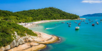

Sobre a cidade:
Florianópolis, a capital do estado de Santa Catarina no sul do Brasil, é maioritariamente constituída pela Ilha de Santa Catarina, com 54 km de comprimento. Foi nomeada pela revista brasileira semanal Veja “o melhor lugar para se viver no Brasil”, por isso nada mais natural do que os turistas quererem conhecê-la também. E eles vão mesmo. Florianópolis é um destino cada vez mais procurado devido às suas praias perfeitas, o excelente surfe, os frutos do mar deliciosos e a combinação de uma cidade grande moderna com fortificações coloniais do século XVI com mercados e parques tranquilos. Saiba mais clicando aqui!Curiosidade:
Dois clubes profissionais de futebol masculino se mantiveram até hoje e juntos possuem 36 títulos catarinenses, o que é um recorde no estado. Desde 1924, disputam o chamado "Clássico de Florianópolis". O Avaí foi fundado em 1923 e tem como cores o azul e o branco. É conhecido como "o Leão da Ilha" ou "o Time da Raça". O Figueirense foi fundado em 1921 e tem como cores o preto e o branco. Apelidado por seus torcedores de "Figueira", também é conhecido como "O Furacão do Estreito". Saiba mais clicando aqui!


Hospedagem:
Descubra acomodações na região de Florianópolis. Estes são os nossos parceiros mais populares em Florianópolis. Encontre a melhor opção para sua viagem. Saiba mais clicando aqui!